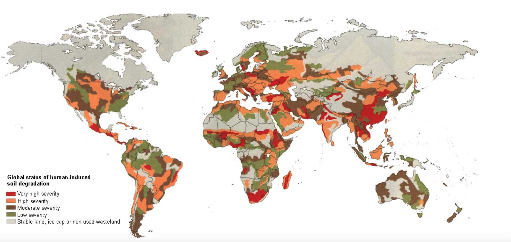
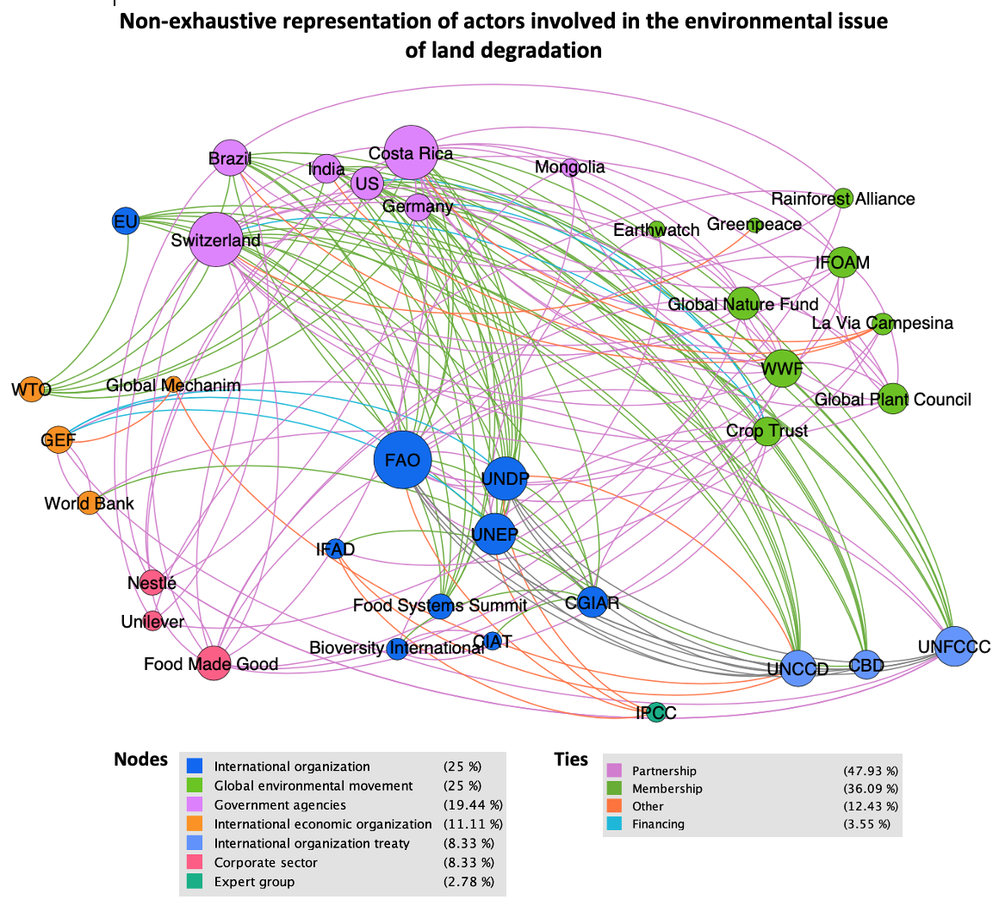

Land degradation is a very complex environmental issue that demands in-deep analysis to understand what are the roles of the actors in the institutional governance and what is the biggest challenge they face. This blog aims to dive into this particular issue to highlight the institutions' role and what they should overcome to solve this issue. The analysis will be in four different parts. The two first parts will be more descriptive and focused on the definitions of the concepts and the actors network. The third part presents the institutions’s role, with a special focus on the United Nations Convention to Combat Desertification (UNCCD) and the analysis of the performance and efficiency in solving the problem. The last part focuses on some suggestions and ideas on how institutions features could be adapted to better respond to the issue.
According to recent studies, approximately 75% of the world’s land area is already degraded. With the population growth and the consumption level increasing in developing countries, demand for food and therefore arable land will keep increase. The food system is indeed responsible for a large part of land degradation as the main causes are the intensification of agriculture production, overgrazing, deforestation, but fuelwood overconsumption and urbanization are also important factors(UNISFÉRA 2005). As globalization and more specifically trade liberalization in agricultural commodities continue to nourish the main drivers of land degradation, institutions have been created to respond to this specific issue and intent to coordinate actions between states to tackle the challenge.

Source: human induced land degradation from: https://www.asente.ch/environmental-issues/land-degradation/
But first, let’s first dive into the different definitions of land degradation to better understand what the institutions are fighting against. They can differ depending on the sources, with some of them giving more emphasis for certain elements than other. According to the IPCC 2019 report, land degradation could be defined as such:
Land degradation is a negative trend in land condition, caused by direct or indirect human-induced processes including anthropogenic climate change, expressed as long-term reduction or loss of at least one of the following: biological productivity, ecological integrity or value to humans.
In other terms, land degradation is the deterioration of the soils' quality which is caused either by human or by nature. However, human-induced land degradation is about 13-40 times more important than the natural rate of land degradation (Rahaman & Solavagounder, 2020). The rapidity at which the soils are destroyed is a big threat for food security, as about five to six million ha are permanently degraded and lost to agriculture (UNISFÉRA, 2019). The main types of soil degradation are water erosion, wind erosion, chemical deterioration and physical deterioration (SSWM 2020). Some types of soil degradation are related to the zones where this happens as explained below.
Land degradation and desertification
The distinction between this two concepts is crucial as institutions analyzed later in this blog will focus on desertification. As highlighted on FAO’s website:
Desertification is a type of land degradation in arid, semi-arid and dry subhumid areas caused by human.
This type of land degradation is found at the intersect of socioeconomic drivers and environmental drivers which makes it more complex for states to tackle it. As presented in the map below, most of the places at risk of desertification are found where vulnerable population live such as in the Sahel, Northern Africa, in the Middle East, Central Asia and some areas in Southern Asia and Latin America (UNISFÉRA, 2019). This create a vicious circle where population do not have capacities and knowledge to adopt sustainable agricultural practices and therefore lands are degraded more rapidly. Combat desertification require a large spectrum of actors, impacting at different levels of the society.
To better understand the process in which the land is degraded, the importance of tackling this issue and why it is such a complex environmental issue, please watch the full video below produced by FAO.
Now, let’s take a look at the map of the actors intervening in the land degradation institutional governance. [need to be re-worked]
Main points presented:
Different actors intervening => look at the institutions more closely (FAO, UNEP, UNDP, UNFCCC, CBD but more importantly, UNCCD => treating specifically land degradation!
Emphasize on UNCCD => for this blog, this was the choice I made, see the role of the institution in this actors network.
The map needs to be reworked => less ties

The infographic below is giving an overview of the main actors involved in land degradation. Special focus is given to agriculture factors => give emphasize on the main cause of land degradation. How important this driver is. The only convention treating specifically about land degradation is UNCCD.
Main points presented:
The relationship between the problem and the institutions => UNCCD roles => neglect the parts
Also reworked slightly the infograph to highlight UNCCD role (and what the convention is not covering specifically => desertification is only one type of land degradation!)
Now that the issue has been defined and that the actors' network and their role in solving the issue has been showcased, a deeper analysis on the problem structure, the institution design features and the institutional participation could be exposed. This part intents to dig into the relation between the issue, UNCCD design and how does it effects the performance and efficiency of the institution.
1) Problem Structure
Desertification is a complex issue as it stands at the intersection of socioeconomic and environmental drivers. One part being linked to human activities on soil such as overgrazing, deforestation, intensive agriculture, and the other being the meteorological factors such as extreme weather events, intensified by climate change (UNISFÉRA Report 2019, p.13).
Problem structure: => Treaty coding to include: Actors, distribution problem, enforcement problem, state of the world uncertainty, preference uncertainty, behavioral uncertainty.
2) Design features
Membership, scope, centralization, control and flexibility
Institutional Participation
Participatory motivation => assistance to developing countries, transfer, settlement of disptue, not a global good.
Participatory gap => LDN concept, specificity of obligations? targets? No enforcement mechanism?
Performance of the Institution
How the UNCCD has solved the issue up until now? => has been efficient or not?